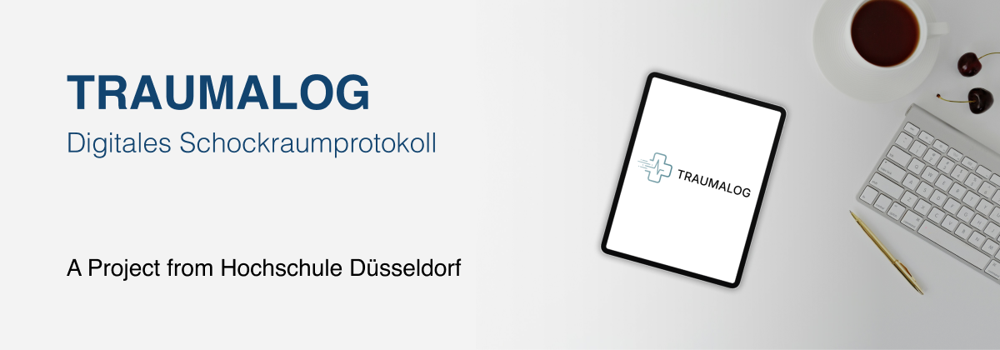
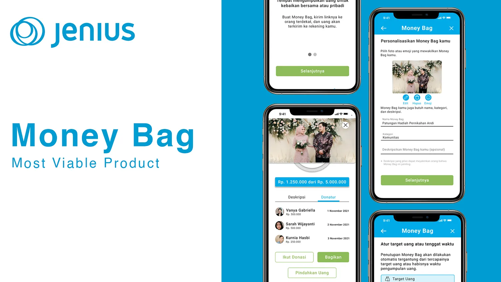

UX Case Studies
Selected projects focusing on user research, interaction design, and complex workflows.

TraumaLog
UX Research | Wireframes | Prototyping | UI Design
This project was developed in collaboration with Städtisches Klinikum Solingen to transform the critical emergency registration process from a manual, paper-based form into a real-time digital ecosystem. The application utilizes a unique QR code for each patient, making it effortless for paramedics to scan and instantly access or update vital patient records on the go.
Read More
Jenius Money Bag
UX Research | Wireframes | Prototyping | MVP | UI Design
Money Bag is a new feature that comes with a mission to help the users to collect money with other Jenius users. The initiator of the Money Bag would create the bag with the complete information of it, such as the name of the created money bag and the category and the description of it. After that the initiator could choose, in which way would the money bag automatically end, whether if the money bag has reached the deadline or the amount of money needed. After the money bag is successfully created, the initiator could just send the link to the money bag right away to the people targeted for this money bag. The people who receive the link then could choose the amount of money they want to send.
Read MoreGrab Express Redesign
UX Research | Wireframes | Prototyping | UI Redesign
This project was developed in collaboration with Städtisches Klinikum Solingen to transform the critical emergency registration process from a manual, paper-based form into a real-time digital ecosystem. The application utilizes a unique QR code for each patient, making it effortless for paramedics to scan and instantly access or update vital patient records on the go.
Read More